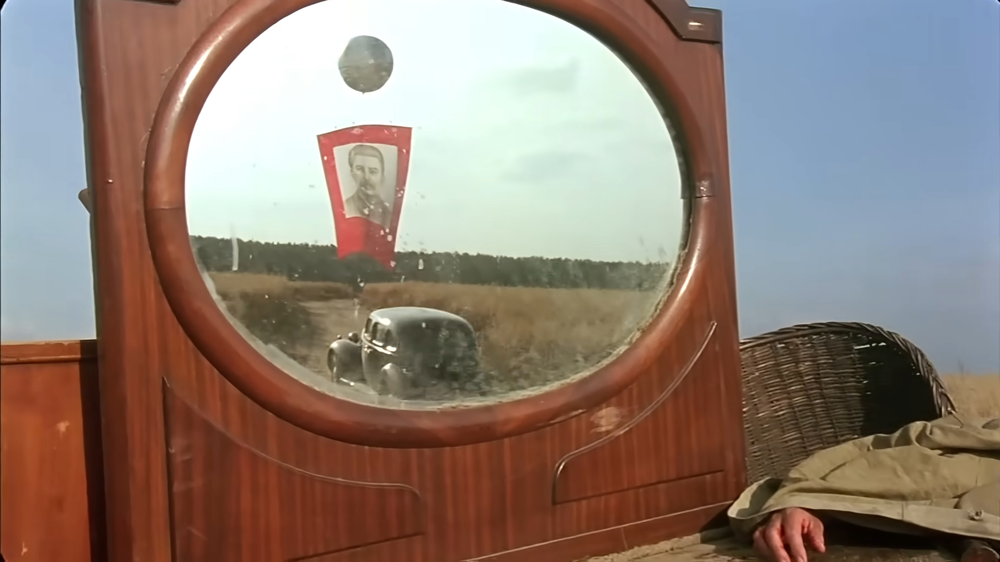

I. A historical figure as architect of state where security services spy on its own people.
Stalin built a system where spying, suspicion, and secrecy were fundamental to both governance and ideology, arguably above all at home and then abroad.
The relationship between Joseph Stalin and espionage is deep and structural—espionage was not just a tool he used, but a core mechanism of how he ruled, controlled society, and projected Soviet power abroad.
1. Espionage as a tool of political control (inside the USSR)
Stalin relied heavily on secret police organizations like the NKVD (and later the KGB) to monitor, infiltrate, and eliminate perceived enemies.
* Surveillance and informant networks penetrated all levels of society.
* Espionage blurred into internal spying, where citizens, party members, and even family were encouraged or coerced to report on each other.
* During the Great Purge (1936–1938), accusations of espionage were a common pretext for arrests, executions, and labor camp sentences.
2. Espionage as paranoia and ideology Stalin believed the USSR was surrounded by hostile capitalist powers. This led to:
* Constant fear of foreign spies and “internal saboteurs.”
* The framing of dissent as espionage or treason.
* Show trials where defendants were accused of spying for countries like Germany, Britain, or Japan—often based on fabricated evidence.

II. Stalin as fictional character in Burnt by the Sun, a post-soviet Russian melodrama critiquing Stalin's political system
Burnt by the Sun by Nikita Mikhalkov—reveals how deeply spying on one's own people for the dictator shaped the figure of the spy as morally ambiguous and internally destructive.
Mitya is a product of Stalinist political terror culture
The character Mitya is not a classic heroic spy. Instead, he reflects the logic of Stalinist terror:
Espionage as personal betrayal
Unlike Western spy stories (like The 39 Steps by Alfred Hitchcock), where spies operate between empires and nations, Burnt by the Sun shows:
1 Espionage within private spaces (family, friendship, love).
2 Mitya’s mission is entangled with his past emotional ties to Kotov’s family.
3 The act of spying overlaps with personal revenge, and violation of private sphere by the state.
Here, Stalinist espionage destroys not just political structures, but human relationships.
The morally ambiguous spy (post-Soviet shift)
Mikhalkov’s film, made after the collapse of the USSR, redefines the spy figure:
1 The Soviet-era idealized agent (loyal, heroic, ideologically pure) disappears.
2 Mitya embodies a fractured identity:
2.1. victim of the system
2.1. agent of repression
2.3. betrayer of those he once loved
This reflects a broader post-Soviet realization: under Stalin, everyone is both accomplice and victim.